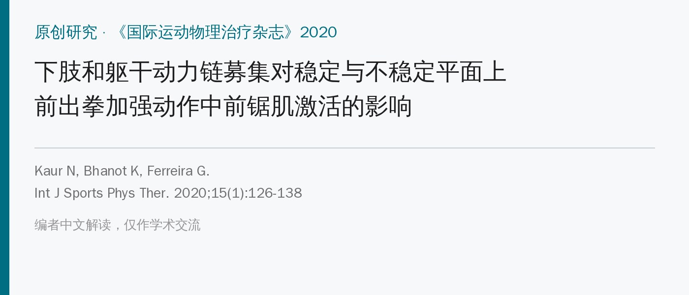
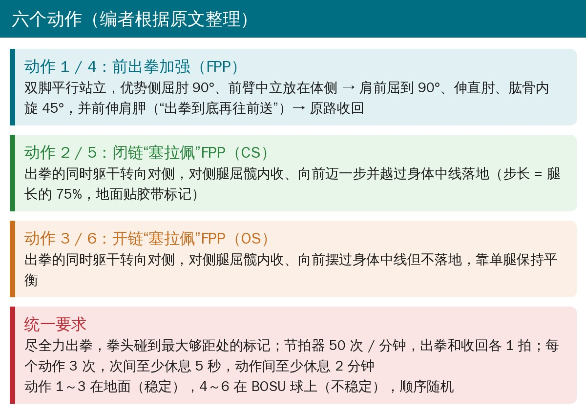
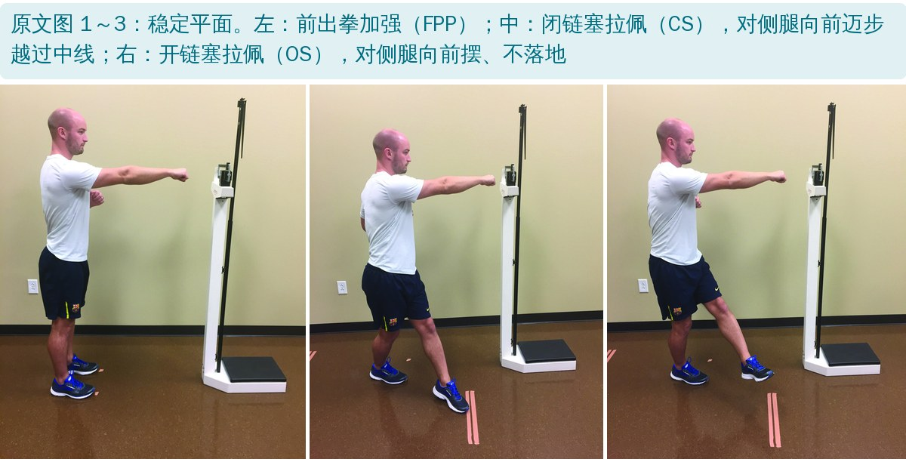
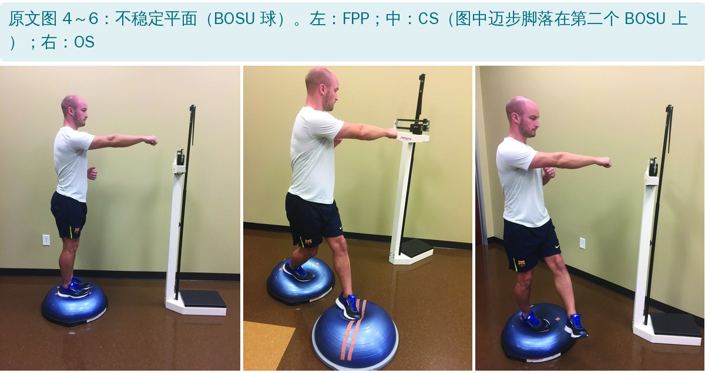
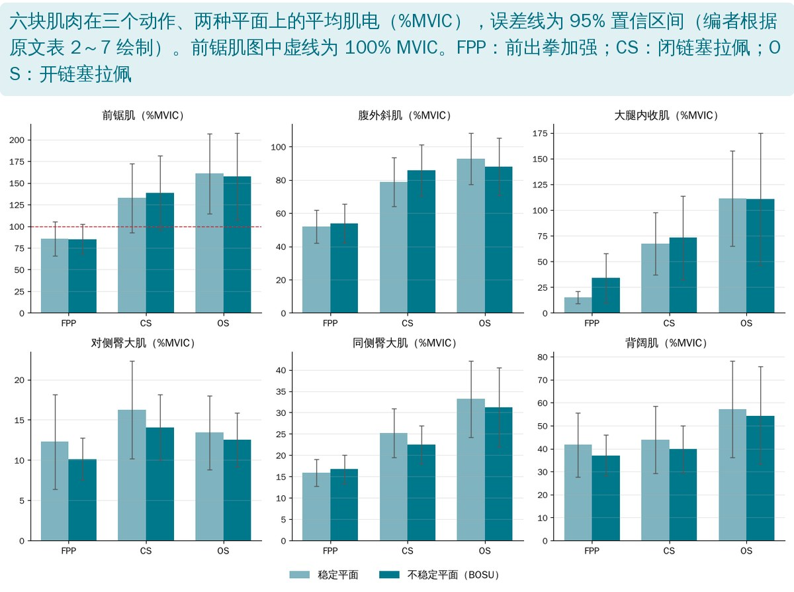

🔖原文信息（编者中文重排）
📚 文献信息
▪ Kaur N, Bhanot K, Ferreira G. Effects of lower extremity and trunk kinetic chain recruitment on serratus anterior muscle activation during forward punch plus exercise on stable and unstable surfaces. Int J Sports Phys Ther. 2020;15(1):126-138. doi:10.26603/ijspt20200126
▪ 作者单位：美国圣奥古斯丁健康科学大学（奥斯汀校区）物理治疗系
▪ 研究类型：描述性、受试者内重复测量的表面肌电研究，21 名健康男性
前锯肌把肩胛骨稳定在胸廓上，是维持正常肩肱节律的关键肌肉之一；肩上回旋、后倾、外旋不足与肩峰下撞击等问题有关，而肩部问题患者的前锯肌常常偏弱。所以前锯肌的运动控制和力量训练是肩部康复的重点。
肩复合体靠全身多节段协同。肌筋膜上，前锯肌是“塞拉佩效应”（serape effect）的一环：前锯肌—同侧菱形肌—腹外斜肌—对侧腹内斜肌—大腿内收肌像一条斜挎的披肩连在一起；前锯肌还在肩胛下角附近与背阔肌相连，再经胸腰筋膜间接连到双侧臀大肌。作者之前已发现：在稳定地面上做前出拳加强时加入躯干和下肢，前锯肌激活更高。
临床上还常用平衡垫、BOSU 球等不稳定平面“增加难度”，但研究结论不一。这篇要回答两个问题：① 在不稳定平面上，加入躯干和下肢动力链还能不能提高前锯肌激活？② 平面变不稳定后，前锯肌激活会不会变？
• 对象：21 名健康男性，平均 26.7 岁，体脂率 12%（为减少脂肪对表面肌电的干扰，只招体脂“一般到很瘦”的人）；样本量按中等效应量（f = 0.25）、检验效能 0.80 计算需要 19 人
• 排除：身体任何部位疼痛、神经肌肉或骨关节疾病、上肢活动受限、半年内上下肢损伤、颈背或四肢手术史、每周上肢力量训练超过 5 小时、支撑腿慢性踝关节不稳
• 肌电：优势侧前锯肌（下部纤维）、背阔肌、腹外斜肌，非优势侧大腿内收肌，双侧臀大肌；按最大自主等长收缩（MVIC）标准化为 %MVIC
• 前锯肌 MVIC：坐在床边，测试侧上肢上举 125°，检查者一手放上臂、一手放肩胛外缘，向下施力让受试者对抗
• 统计：双因素重复测量方差分析（平面 × 动作），再按平面分别做单因素重复测量方差分析和 Sidak 事后比较

🔖六个动作（编者根据原文整理）

🔖原文图 1～3：稳定平面上的三个动作

🔖原文图 4～6：BOSU 球上的三个动作
• 前出拳加强（FPP）：起始双脚平行站立，优势侧屈肘 90°、前臂中立放在体侧；肩前屈到 90°、伸肘、肱骨内旋 45°，同时把肩胛向前“送出去”，再原路收回
• 闭链塞拉佩（CS）：出拳同时躯干转向对侧，对侧腿屈髋内收、向前迈步越过身体中线落地；步长统一为腿长（髂前上棘到内踝）的 75%，地面用胶带标出
• 开链塞拉佩（OS）：出拳同时躯干转向对侧，对侧腿屈髋内收、向前摆过中线但不落地，单腿保持平衡
• 每次都要尽全力出拳，拳头碰到最大够距处的标记，保证肩胛充分前伸；节拍器 50 次 / 分钟，出拳 1 拍、收回 1 拍
• 每个动作做 3 次，次间至少休息 5 秒；不同动作之间至少休息 2 分钟；6 个动作顺序随机

🔖六块肌肉的平均肌电（编者根据原文表 2～7 绘制）
• 加入动力链有效：两种平面上，前锯肌在 CS 和 OS 中的激活都显著高于单纯 FPP（稳定平面：85.5% → 132.5% / 160.7% MVIC）；腹外斜肌、内收肌、同侧臀大肌也一样
• 对侧臀大肌只有 CS 显著高于 FPP，OS 不显著；背阔肌三个动作之间没有差异
• CS 和 OS 之间，只有内收肌有差异（OS 更高）
• 不稳定平面没用：所有肌肉在稳定和不稳定平面之间都没有差异（平面主效应 P = 0.835，交互作用 P = 0.714）
• 只是健康年轻男性的肌电：不能直接推到肩痛患者、女性或其他年龄段；肌电高也不等于训练效果更好
• 前锯肌超过 100% MVIC：CS、OS 中前锯肌达到 130%～160% MVIC，说明所用的 MVIC 测试姿势很可能没有诱发出真正的最大收缩；作者也承认这一点，所以数值只能在本研究内部比较
• 变异很大：内收肌在 OS 中的标准差（101～141）甚至大于均值，个体差异非常大
• 表面肌电的局限：电极位置、串扰（前锯肌和背阔肌离得很近）、动态动作中的伪迹都会影响结果
• “不稳定平面没用”只针对 BOSU 和这三个动作：作者认为 BOSU 带来的不稳定可能不够，换其他平面或更动态的动作结论可能不同
• 作者给研究定的证据等级是 2b，但这是实验室肌电描述性研究，不是疗效研究
• 摘要说得太满：摘要说“除背阔肌外，所有肌肉在 CS 和 OS 中都显著高于 FPP”，但表 5 中对侧臀大肌 OS 与 FPP 的比较 P = 0.549（稳定）和 0.223（不稳定），并不显著；正文结果部分自己也写了这一点
• 背阔肌的 F 值和 P 值对不上：不稳定平面 F = 4.8、P = 0.074。按 21 人、3 个动作（自由度 2, 40），F = 4.8 对应 P ≈ 0.013；即使做了球形校正，也很难到 0.074
• “除背阔肌外”的统计量含糊：结果写“除背阔肌外，所有肌肉在动作之间都有差异（F = 12.7，P < 0.001）”，只给了一个 F 值，不知道是哪块肌肉的
• 引用了不存在的表：结果部分说对侧臀大肌的差异见“表 1～6”，但表 1 是纳入 / 排除标准，肌电数据在表 2～7
• 表 2 星号标注不一致：不稳定平面的 CS、OS 均值后面也加了 *（138.40*、157.39*），稳定平面没有加，而 P 值列已经标了显著性
• 图 5 用了两个 BOSU：照片中迈步脚落在第二个 BOSU 上，方法部分只说在 BOSU 上做，没有说明迈步落点也是不稳定平面
• 站姿描述不一致：动作描述是“双脚平行站立”，后文又说“双脚与髋同宽站在两种平面上”；单个 BOSU 上如何完成向前迈 75% 腿长的一步，没有交代
• 样本量计算参数不清：“自由度 = 6”与 2 × 3 的重复测量设计对不上
• 小错：“two of its’ variations”“thoraco-lumbar fasci”“reccomended”
• 想多练前锯肌，就把腿和躯干带上：在前出拳加强的基础上加躯干对侧旋转和对侧腿迈步（CS）或摆腿（OS），前锯肌激活明显更高
• 动作要点：出拳到底后继续把肩胛向前送；肱骨内旋约 45°；用节拍器控制速度（出拳 1 拍、收回 1 拍）
• CS 更稳、OS 更难：OS 要单腿平衡，内收肌参与更多；可以从 FPP → CS → OS 进阶
• 别迷信 BOSU：加个不稳定平面不一定提高肌肉激活，想提高难度，先考虑加动力链、负荷或速度
• 结合患者情况：这是健康人的肌电数据，用于肩痛患者时仍要看疼痛、代偿和功能反应
| 纳入标准 | 排除标准 |
|---|---|
| • 男性 • 18～40 岁 • 按 ACSM《运动测试与处方指南》，年龄相关体脂率处于“一般”到“很瘦” | • 目前身体任何部位疼痛 • 任何神经肌肉疾病、关节或骨疾病 • 上肢活动受限（目测） • 近 6 个月内上肢或下肢损伤 • 颈、背、上肢或下肢手术史 • 每周上肢力量训练超过 5 小时 • 支撑腿慢性踝关节不稳史（用踝关节不稳量表判定） |
原文表 1：纳入 / 排除标准（中文翻译）
ACSM：美国运动医学会。
| 动作 | 均值（%MVIC） | 标准差 | 95% CI（下限～上限） | P 值 |
|---|---|---|---|---|
| 稳定平面 | ||||
| FPP | 85.50 | 43.17 | 65.85～105.15 | |
| CS | 132.54 | 86.97 | 92.95～172.13 | 0.034* |
| OS | 160.65 | 100.95 | 114.70～206.60 | 0.001* |
| 不稳定平面 | ||||
| FPP | 84.98 | 37.70 | 67.819～102.14 | |
| CS | 138.40* | 94.33 | 95.46～181.33 | 0.03* |
| OS | 157.39* | 110.23 | 107.21～207.57 | 0.007* |
原文表 2：三个动作中前锯肌的平均肌电激活（中文翻译）
| 动作 | 均值（%MVIC） | 标准差 | 95% CI（下限～上限） | P 值 |
|---|---|---|---|---|
| 稳定平面 | ||||
| FPP | 52.08 | 21.81 | 42.15～62.01 | |
| CS | 78.75 | 32.61 | 63.90～93.59 | 0.001* |
| OS | 92.68 | 34.04 | 77.18～108.17 | 0.001* |
| 不稳定平面 | ||||
| FPP | 53.83 | 25.87 | 42.05～65.60 | |
| CS | 85.87 | 33.99 | 70.40～101.34 | 0.001* |
| OS | 87.79 | 37.94 | 70.52～105.06 | 0.001* |
原文表 3：三个动作中腹外斜肌的平均肌电激活（中文翻译）
| 动作 | 均值（%MVIC） | 标准差 | 95% CI（下限～上限） | P 值 |
|---|---|---|---|---|
| 稳定平面 | ||||
| FPP | 14.87 | 13.11 | 8.90～20.834 | |
| CS | 67.34 | 67.06 | 36.82～97.87 | 0.002* |
| OS | 111.52 | 101.71 | 65.21～157.81 | 0.001* |
| 不稳定平面 | ||||
| FPP | 33.92 | 52.57 | 9.99～57.85 | |
| CS | 73.00 | 88.76 | 32.60～113.41 | 0.003* |
| OS | 110.82 | 140.68 | 46.78～174.86 | 0.003* |
原文表 4：三个动作中大腿内收肌的平均肌电激活（中文翻译）
| 动作 | 均值（%MVIC） | 标准差 | 95% CI（下限～上限） | P 值 |
|---|---|---|---|---|
| 稳定平面 | ||||
| FPP | 12.27 | 12.93 | 6.39～18.16 | |
| CS | 16.27 | 13.38 | 10.18～22.36 | 0.001* |
| OS | 13.41 | 10.07 | 8.82～17.99 | 0.549 |
| 不稳定平面 | ||||
| FPP | 10.12 | 5.78 | 7.49～12.75 | |
| CS | 14.07 | 9.02 | 9.97～18.18 | 0.04* |
| OS | 12.53 | 7.34 | 9.19～15.87 | 0.223 |
原文表 5：三个动作中对侧臀大肌的平均肌电激活（中文翻译）
| 动作 | 均值（%MVIC） | 标准差 | 95% CI（下限～上限） | P 值 |
|---|---|---|---|---|
| 稳定平面 | ||||
| FPP | 15.91 | 7.00 | 12.72～19.09 | |
| CS | 25.16 | 12.63 | 19.41～30.91 | 0.002* |
| OS | 33.20 | 19.69 | 24.23～42.16 | 0.001* |
| 不稳定平面 | ||||
| FPP | 16.70 | 7.47 | 13.30～20.10 | |
| CS | 22.46 | 9.69 | 18.05～26.87 | 0.002* |
| OS | 31.18 | 20.50 | 21.85～40.51 | 0.001* |
原文表 6：三个动作中同侧臀大肌的平均肌电激活（中文翻译）
| 动作 | 均值（%MVIC） | 标准差 | 95% CI（下限～上限） | P 值 |
|---|---|---|---|---|
| 稳定平面 | ||||
| FPP | 41.63 | 28.03 | 27.69～55.57 | |
| CS | 43.8 | 29.3 | 29.24～58.39 | 0.957 |
| OS | 57.27 | 42.27 | 36.24～78.29 | 0.146 |
| 不稳定平面 | ||||
| FPP | 37.03 | 18.07 | 28.05～46.02 | |
| CS | 39.79 | 20.62 | 29.53～50.05 | 0.785 |
| OS | 54.32 | 42.56 | 33.15～75.79 | 0.074 |
原文表 7：三个动作中背阔肌的平均肌电激活（中文翻译）
FPP：前出拳加强；CS：闭链塞拉佩效应 FPP；OS：开链塞拉佩效应 FPP。* P ≤ 0.05。P 值为与 FPP 比较的结果。
欢迎关注骨科康复小黄公众号，获取更多物理治疗的专业知识！
📄参考文献：
Kaur N, Bhanot K, Ferreira G. Effects of lower extremity and trunk kinetic chain recruitment on serratus anterior muscle activation during forward punch plus exercise on stable and unstable surfaces. Int J Sports Phys Ther. 2020;15(1):126-138. doi:10.26603/ijspt20200126
原文 PDF 中未标注开放许可协议，版权归原作者和出版方所有。本文为学术交流用的中文解读：原文图 1～6 引自原文并加中文图注，表 1～7 为中文翻译，动作卡和肌电结果图为编者根据原文整理绘制。如有侵权请联系删除。